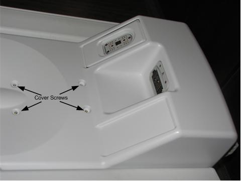
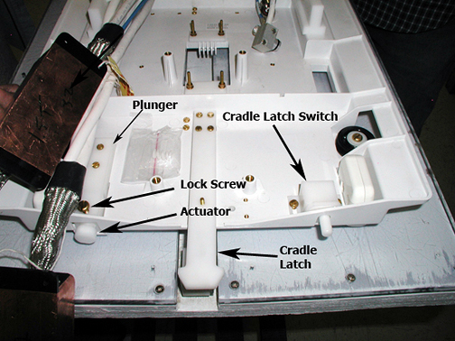
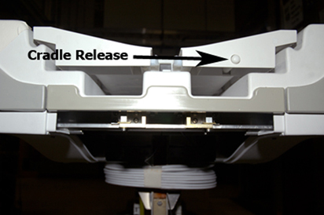

Operating Documentation
Direction 5670006, Rev# 1
Discovery MR750w GEM Service Methods
Module Version 6.0, Version Date 7/8/11
Operating Documentation |
| Required Persons | Preliminary Reqs | Procedure | Finalization |
|---|---|---|---|
| 1 | n/a | 15 minutes | n/a |
The actuator on the Low Profile Carriage Assembly (LPCA) must be set so that it presses a button on the Cradle to mechanically release the Cradle from the Patient Table, allowing it to move forward into the magnet bore.
| Item | Qty | Effectivity | Part# | Manufacturer | |
|---|---|---|---|---|---|
| Non-ferrous standard head screwdriver | 1 | - | - | - | |
Remove the LPCA cover.
Illustration 1: LPCA Cover Screws

To properly adjust the Cradle release, loosen the Lock Screw on the plunger. See Illustration 2.
Illustration 2: Adjusting the Plunger

| NOTE: | The actuator must be positioned almost flush with the front surface of the Cradle when the LPCA is attached to the Cradle. If the actuator is positioned too far away from the Cradle, it will not sufficiently engage the Cradle Release button and Cradle will not move. Likewise, if the actuator is positioned too far into the Cradle, the LPCA will tend to bind with Cradle, resulting in a loud noise whenever the LPCA detaches from Cradle as Table is lowered. Fine-adjust the actuator as necessary. |
Illustration 3: Cradle Release button

Rotate the threaded Actuator in or out as needed, then re-tighten the Lock Screw.
Replace the LPCA cover.
No finalization steps.